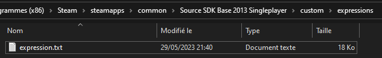
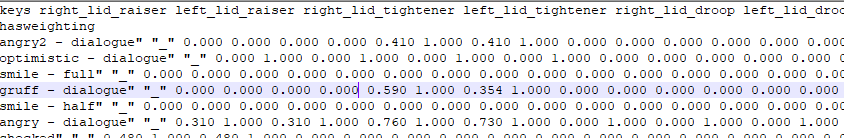
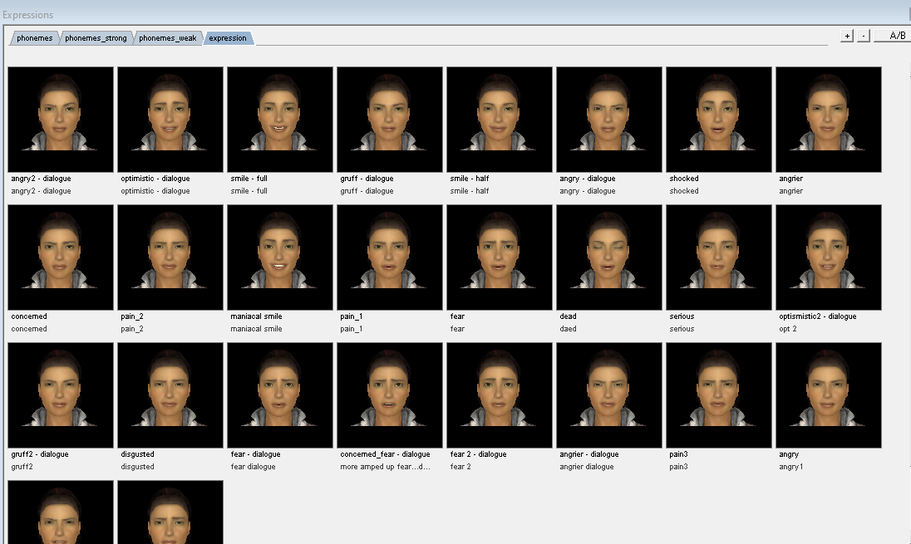
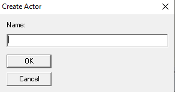
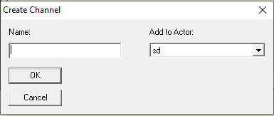
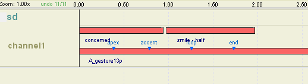
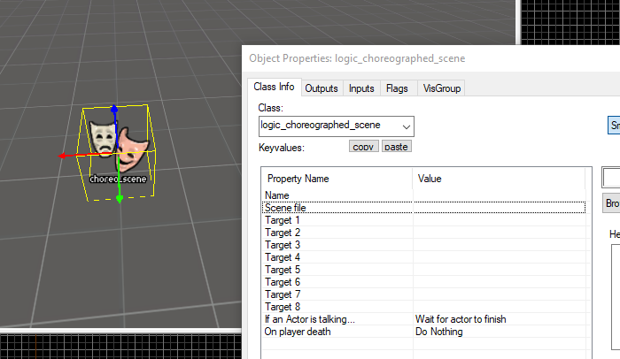

Système de dialogue
Ce chapitre a pour but de vous créer des dialogues avec vos npc. Nous allons utiliser le logiciel hlfaceposer.exe dans le dossier bin du moteur source.
Expression
Le système Flex Sliders pemet de tester les expressions de votre personnage

Pour sauvegarder les expressions, il faut créer un fichier .txt dans le dossier expressions (cf. Exemple expressions.txt )

Ce fichier contient les variables des flex sliders.

Vous pouvez voire tous les expressions lister dans le fichier avec la fenêtre expression.

Choreography
Crée un nouveau fichier .vcd dans le dossier scene avec Choreography->new...
Nommer votre acteur

Cliquer sur le nom de votre acteur et crée un nouveau channel associer à un acteur. Les channel sont comme une timeline dans les logiciels de montage.

Vous pouvez mettre votre fichier audio, les expressions et les gestures de la scène.

Dialogue dans Hammer
Placer un logic_choreographed_scene dans hammer et sélectionner votre fichier .vcd
